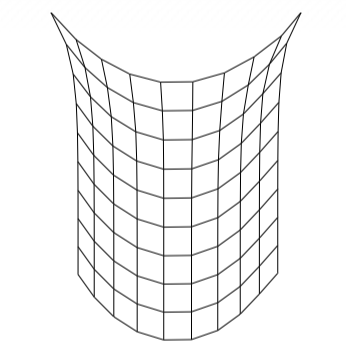
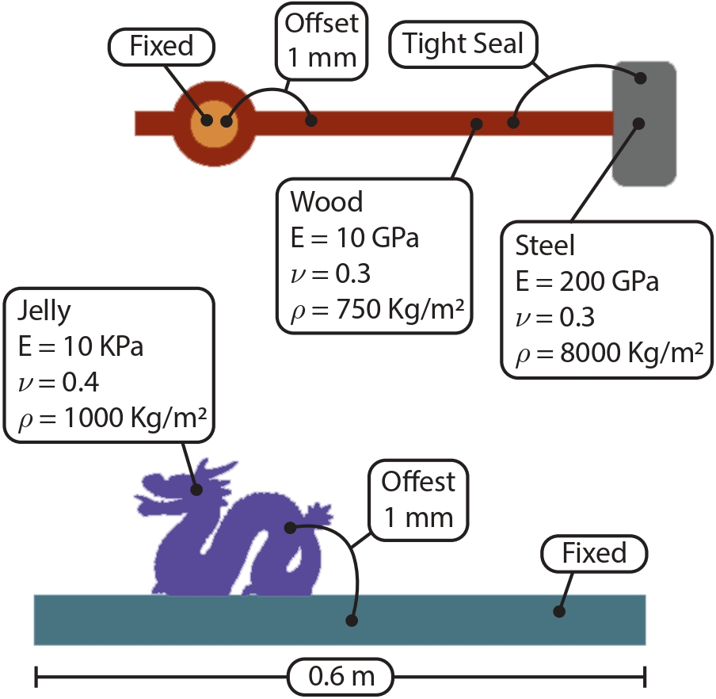

|
Zhouyuan Chen I'm a second-year Master student studying at New York University, Courant Institute of Mathematical Sciences. I am working in the Geometric Computing Lab supervised by Prof. Daniele Panozzo and Prof. Daniel Zint. Before that, I received my bachelor's degree from Zhejiang University of Technology, advised by Prof. Jiazhou Chen. |

|
Publications & PreprintsMy research interest is Computer Graphics. More specifically, I'm currently working on Meshing and Elastic Simulation. |
|  |
Shell Simulation
Zhouyuan Chen, Daniel Zint, Teseo Schneider, Denis Zorin, Daniele Panozzo arXiv, 2025 To get a more accurate shell simulation result, we tried to build a finite element method simulation system with hybrid elements. project page / arXiv |

|
Image Simulator
Daniel Zint, Zhouyuan Chen, Teseo Schneider, Denis Zorin, Daniele Panozzo arXiv, 2024 We presented a novel pipeline and a robust meshing system to help people directly do simulation from the medical voxel image data. project page / arXiv |
|
Topological Offsets
Daniel Zint, Zhouyuan Chen, Yifei Zhu, Teseo Schneider, Denis Zorin, Daniele Panozzo arXiv, 2024 With the volumetric mesh, we developed a topology-preserved algorithm to generate free-intersection offset mesh. project page / arXiv |
Teaching |

|
Teaching Assistant
CSCI-GA.3033-018: Geometric Modelling at New York University, Spring 2024 |

|
Grader
CSCI-UA 101: Intro to Computer Science at New York University, Spring 2024 |
Software & Code |
|  |
3D Slicer Extension: Image Annotation Mesher
An automatic mesh generator produces tetrahedron or triangle mesh from the segmented CT images. Code / Installer / Manual / Demo |

|
Hansfive Virtual Teeth
Software that handles teeth models collision visualization, acceleration, and teeth undercut model generation. Code / Demo1 / Demo2 |

|
ColCal(Collision Calculation Library)
A light-weight Broad-Phase collision detection library. Code |
Education |
|
New York University
Master in Computer Science 2023 - Current |
|
|
Zhejiang University of Technology
Bachelor in Software Engineering 2019 - 2023 |
Notes |
Geometry Processing |
Hack in std::map with
Eigen
Iterative Closest Point Algorithm(ICP) |
Simulation |
The Jacobian of SVD |
|
Website template can be found here. Credits to Jon Barron. |